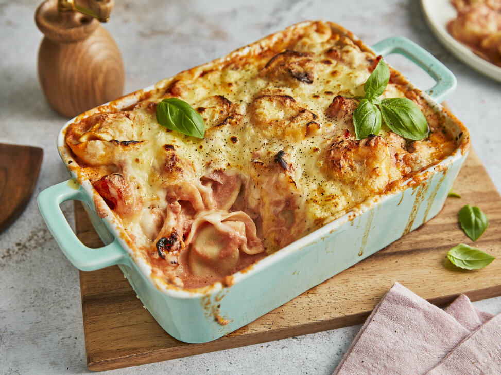

Beschreibung
Das ist ein Rezept für einen sehr leckeren Tortellini Auflauf für mehrere Personen
Nachstehend sind sowohl die Zutaten als auch die Zubereitung beschrieben
Zutaten
- 2 Chilischoten
- 2 Zwwiebeln
- 2 Knoblauchzehen
- 400g Tomaten, gestückelte, Konserve
- 2 EL Petersilie gehackte
- Salz und Pfeffer
- Chilipulver
- Paprikapulver
- 120g Tortellini, trockene
- 4 EL Käse, geribener bis 30% Fett
Zubereitung
- Die Tortellini nach Packungsangabe kochen
- Die Chilischoten in Ringe, die Zwiebeln in Würfel schneiden. Den Knoblauch fein hacken.
- Den Schinkenspeck in einem heißen Topf auslassen, Knoblauch, Zwiebelwürfel und Chiliringe dazugeben, kurz andünsten und mit den gestückelten Tomaten ablöschen.
- Die Sauce mit Petersilie, Salz, Pfeffer, Paprika- und Chilipulver würzen und mit den Tortellini in eine Auflaufform geben.
- Den Auflauf mit Käse bestreuen und im Backofen auf mittlerer Schiene bei Umluft 160°C ca. 20 Minuten überbacken.